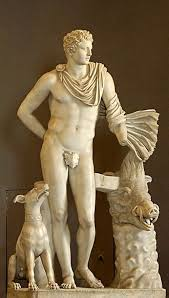
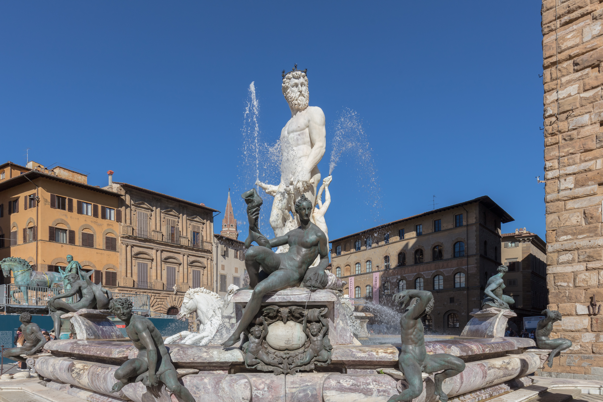

Un dios marino que se desplaza en carro tirado por caballos: la primera rareza de Poseidón ya lo delata. Antes de ser el dios griego de los mares, fue una divinidad de origen indoeuropeo con dominios terrestres. La segunda parte de su nombre alude a la diosa de la tierra y comparte raíz con Damáter (Deméter). Los cultos arcadios conservan el vínculo: Deméter Erinia fue fecundada como yegua por Poseidón en forma de caballo, y de esa unión nació Arión, el caballo maldito. Poseidón y Deméter son, en el origen, la tierra y lo que agita la tierra.
Gastón Bachelard, en El agua y los sueños, describe el agua como un destino esencial que transforma sin cesar la sustancia del ser. Bajo las imágenes superficiales del agua existe una serie de imágenes cada vez más profundas, cada vez más tenaces.1 Poseidón habita exactamente ese estrato: no la superficie del mar sino sus capas más oscuras, donde las emociones no tienen nombre todavía.
Su comportamiento inestable —calmas repentinas, tempestades sin causa aparente, terremotos mientras duerme— es el de alguien cuya historia verdadera se cuenta desde abajo. En su aspecto benigno creaba islas y calmaba mares. Cuando se enojaba —y se enojaba con frecuencia— hendía el suelo con su tridente, provocaba naufragios, hundía puertos. No era capricho: era el rencor de alguien obligado a moverse en un elemento que no es el suyo.
El símbolo del USB está inspirado en el tridente de Poseidón. En el documental Lo and Behold (Werner Herzog, 2016), el pionero de internet Ted Nelson cuenta que de niño arrastraba sus manos en el agua de un bote para percibir cómo abría y cerraba espacios entre los dedos: esa fascinación lo llevó a imaginar las estructuras dinámicas de la red. Navegar por internet: el verbo ya estaba ahí, esperando a Poseidón.
Pathosformeln visualesEscopas (atribuido), Poseidón del grupo escultórico (siglo IV a.C., copia romana)
Museo Arqueológico Nacional, Atenas
Poseidón con tridente en tensión, la figura inclinada hacia adelante. Pathosformel del dios a punto de actuar: la fuerza contenida antes del terremoto, el instante antes de la agitación.
Fontana, Niccolò, Fuente de Neptuno (1563–1566)
Piazza del Nettuno, Bolonia
Poseidón en el centro de la fuente, tridente en alto, rodeado de sirenas. Pathosformel del dominio sobre el propio destierro: el dios que ejerce soberanía sobre el elemento que lo incomoda.
Böcklin, Arnold, El juego de las olas (1883)
Neue Pinakothek, MúnichPoseidón emergente entre cuerpos que se agitan en el agua. Pathosformel del dios que sube a la superficie: lo que viene de las profundidades e irrumpe en el mundo visible con violencia y gozo simultáneos.